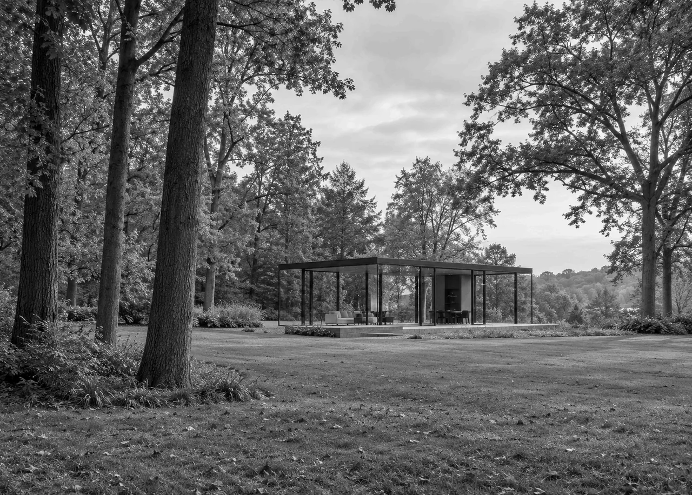
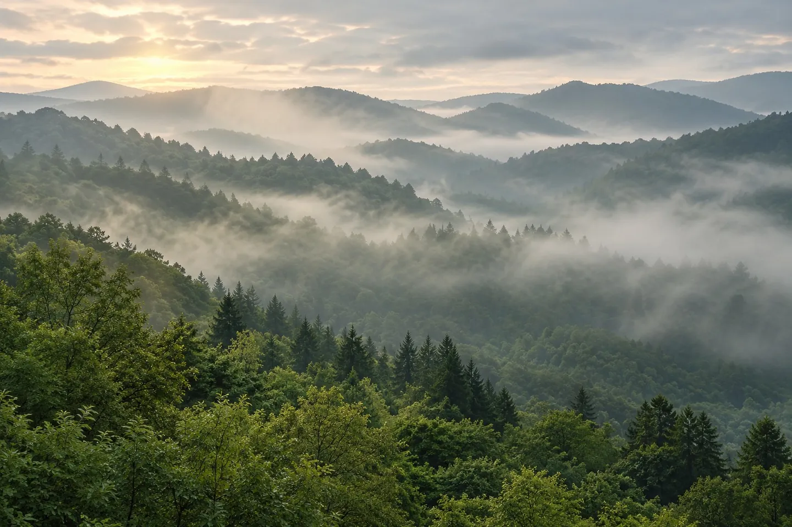

Sodo vila
Atvira šviesai, su atskira skaitymo vieta ir terasa į medžių pusę.
2 svečiai / 48 m² / sodasVanduo už lango. Tyla viduje.
Šešios vilos ir nė vienos priežasties skubėti.

Tylus pasivaikščiojimas miško taku. Kvėpavimo praktika ir pusryčiai tada, kai norisi. Laikas, kurio nereikia užpildyti.
Pasirinkite paros metą – keičiasi nuotrauka, ritualas ir puslapio šviesa. Pasirinkta: rytas.
Dvi iliustracinės vilų kryptys.
Be tikro užimtumo ar rezervavimo.

Atvira šviesai, su atskira skaitymo vieta ir terasa į medžių pusę.
2 svečiai / 48 m² / sodasTylus rytas prie vandens, ilgi vakarai ir horizontas vietoj ekrano.
2–3 svečiai / 62 m² / vanduoPasirinkite vietą, datas ir tai, ką norėtumėte patirti. Parodysime jūsų viešnagės sumanymą.
Tai demonstracija. Duomenys neišsaugomi ir niekur nesiunčiami. Tikrų užsakymų nepriimame.